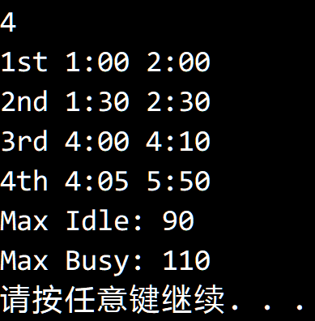

© 2019 《算法（第四版）》C# 题解 | Provided By 沈星繁
搜索解答
目前已完成到 2.5
2.5.20
上次更新：2019-02-12
题目
2.5.20 空闲时间。 假设有一台计算机能够并行处理 N 个任务。 编写一段程序并给定一系列任务的起始时间和结束时间， 找出这台机器最长的空闲时间和最长的繁忙时间。
解答
我们以事件为单位进行处理，每个事件包含任务名，记录时刻和开始/结束标记。 随后按照时间从小到大排序，遍历事件数组。 设开始的时候机器空闲，设置计数器，作为当前正在运行的任务数量。 当遇到开始事件时，计数器加一；遇到结束事件时，计数器减一。 如果计数器加一之前计数器为 0，说明空闲状态结束，记录并更新空闲时间，当前时间为忙碌开始的时间。 如果计数器减一之后计数器为 0，说明忙碌状态结束，记录并更新忙碌时间，当前时间为空闲开始的时间。
测试结果： 
代码
using System;
namespace _2._5._20
{
class Program
{
/// <summary>
/// 任务变化事件。
/// </summary>
class JobEvent : IComparable<JobEvent>
{
public string JobName;
public int Time;
public bool IsFinished = false; // false = 开始，true = 结束
public int CompareTo(JobEvent other)
{
return this.Time.CompareTo(other.Time);
}
}
static void Main(string[] args)
{
// 输入格式： JobName 15:02 17:02
int nowRunning = 0; // 正在运行的程序数量
int maxIdle = 0;
int maxBusy = 0;
int items = int.Parse(Console.ReadLine());
JobEvent[] jobs = new JobEvent[items * 2];
for (int i = 0; i < jobs.Length; i += 2)
{
jobs[i] = new JobEvent();
jobs[i + 1] = new JobEvent();
jobs[i].IsFinished = false; // 开始事件
jobs[i + 1].IsFinished = true; // 停止事件
string[] record = Console.ReadLine().Split(new char[] { ' ', ':' }, StringSplitOptions.RemoveEmptyEntries);
jobs[i].JobName = record[0];
jobs[i + 1].JobName = record[0];
jobs[i].Time = int.Parse(record[1]) * 60 + int.Parse(record[2]);
jobs[i + 1].Time = int.Parse(record[3]) * 60 + int.Parse(record[4]);
}
Array.Sort(jobs);
// 事件处理
int idleStart = 0;
int busyStart = 0;
for (int i = 0; i < jobs.Length; i++)
{
// 启动事件
if (!jobs[i].IsFinished)
{
// 空闲状态结束
if (nowRunning == 0)
{
int idle = jobs[i].Time - idleStart;
if (idle > maxIdle)
maxIdle = idle;
// 开始忙碌
busyStart = jobs[i].Time;
}
nowRunning++;
}
else
{
nowRunning--;
// 忙碌状态结束
if (nowRunning == 0)
{
int busy = jobs[i].Time - busyStart;
if (busy > maxBusy)
maxBusy = busy;
// 开始空闲
idleStart = jobs[i].Time;
}
}
}
Console.WriteLine("Max Idle: " + maxIdle);
Console.WriteLine("Max Busy: " + maxBusy);
}
}
}